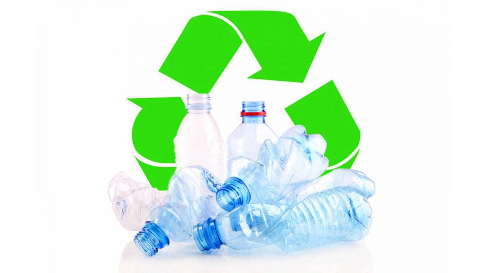
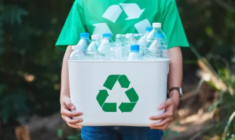
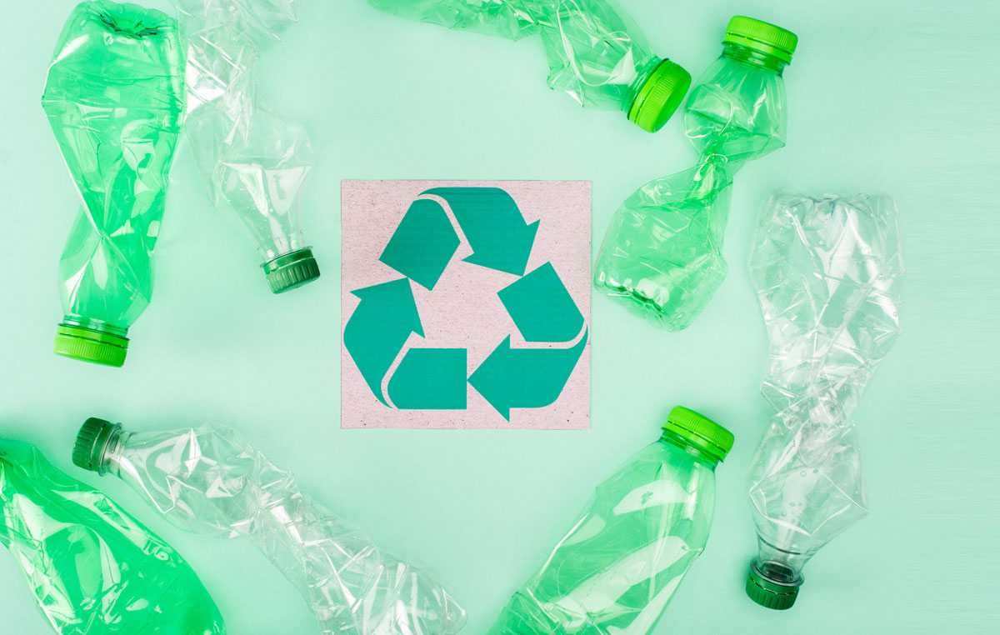

Reduciendo la huella sintética en nuestro planeta

El reciclaje de plástico es el proceso mediante el cual se recuperan residuos plásticos para reutilizarlos, aprovecharlos como materia prima en la fabricación de nuevos productos o transformarlos en combustibles y otros productos químicos. De esta manera se reduce la cantidad de desechos que llegan a vertederos e incineradoras y se limita el impacto ambiental asociado a la producción de plástico virgen.
El plástico es un material muy persistente en el medio ambiente, y cuando no se gestiona correctamente puede acumularse durante décadas en vertederos o fragmentarse en microplásticos que alcanzan ríos y océanos. Reciclar contribuye a disminuir el consumo de recursos fósiles, reduce emisiones de gases de efecto invernadero y favorece la economía circular al mantener los materiales dentro del ciclo productivo el mayor tiempo posible.
Además, el reciclaje permite que envases y otros productos plásticos se transformen en materias primas secundarias, como granzas o pellets, que pueden emplearse en la fabricación de nuevos objetos, disminuyendo la dependencia de materias primas vírgenes y el consumo energético global del sistema productivo.
Antes de reciclar, los plásticos se clasifican según el tipo de resina del que están hechos. Para facilitar este proceso, los productos suelen identificarse con un código de identificación de resinas (por ejemplo, PET, HDPE, PVC, LDPE, PP, PS), lo que ayuda a agrupar materiales con propiedades similares y a mejorar la calidad del reciclado.
La calidad del plástico reciclado depende en gran medida del grado de separación y limpieza, por lo que una correcta clasificación en los hogares y empresas es clave para obtener materiales reciclados con mejores propiedades y más aplicaciones en la industria.
El proceso típico de reciclaje de plástico incluye varias etapas encadenadas: recogida de los residuos, clasificación por tipos de resina, triturado, lavado para eliminar contaminantes, secado, fundido y, finalmente, granulación en forma de pequeñas esferas. Estas granzas se convierten después en materia prima para extrusión, moldeo por inyección u otros procesos industriales, permitiendo fabricar nuevos productos a partir de residuos plásticos.

